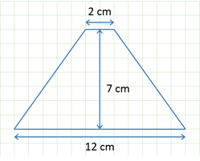
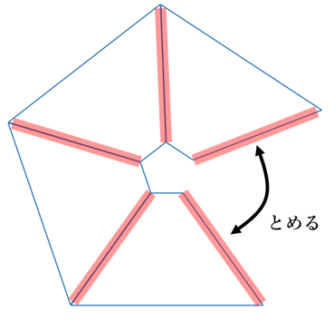

＜スクリーンの作り方＞ まず、透明なプラスチック板を用意します。 CDケースや工作用のプラ板でもいいですが、100均のクリアカードケース（硬質タイプ）が加工しやすくておすすめです。  次に、上図のような底辺が12cmと2cm、高さが7cmの台形の型紙を作り、それに合わせてプラスチック板を4枚同じ形に切り出します。  最後に、切ったプラスチック板をテープで留めて、ピラミッド型に組み立てたら完成！